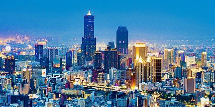

a special municipality in southern Taiwan.

Main landmarks of Kaohsiung city include the 85 Sky Tower , the ferris wheel of the Kaohsiung Dream Mall , the Kaohsiung Arena and Port of Kaohsiung. The newly developed city is also known for having a large number of shopping streets , organized night markets and newly developed leisure parks such as the Pier-2 Art Center , E-DA Theme Park, Metropolitan Park, the Kaohsiung Museum of Fine Arts and Taroko Park.;